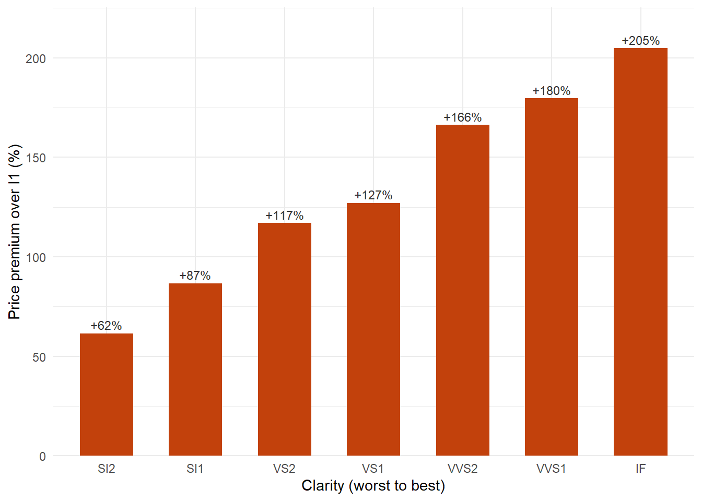

library(ggplot2)
library(dplyr)
library(reticulate)
venv_python <- if (.Platform$OS.type == "windows") {
file.path("..", "..", ".venv", "Scripts", "python.exe")
} else {
file.path("..", "..", ".venv", "bin", "python")
}
use_python(normalizePath(venv_python, mustWork = TRUE), required = TRUE)Pricing diamonds in two languages
r
python
reticulate
In my diamonds post I showed that clarity only makes sense as a price signal once you account for weight. This post answers the next question: how much is each clarity grade worth, for diamonds of the same weight? It also does something new. R prepares the data, Python fits the model, and R draws the result, all on one page, passing objects back and forth.
Data: diamonds, a dataset of prices and attributes of almost 54,000 round-cut diamonds, distributed with the ggplot2 package (MIT licence). Wickham, H. (2016). ggplot2: Elegant Graphics for Data Analysis. Springer-Verlag New York.
Step 1 (R): prepare the data
Price grows by a steady percentage for every percentage increase in weight, so I work with the logarithms of both. I also pass the clarity grades in their proper order, from worst (I1) to best (IF), so Python does not sort them alphabetically.
diamonds_model <- diamonds |>
transmute(
log_price = log(price),
log_carat = log(carat),
clarity = as.character(clarity)
)
clarity_levels <- levels(diamonds$clarity)
dim(diamonds_model)[1] 53940 3clarity_levels[1] "I1" "SI2" "SI1" "VS2" "VS1" "VVS2" "VVS1" "IF" Step 2 (Python): fit and compare two models
Python picks up both R objects with r.diamonds_model and r.clarity_levels. It then uses scikit-learn to compare two linear regression models with 5-fold cross-validation: one that uses weight only, and one that uses weight plus clarity.
import pandas as pd
from sklearn.linear_model import LinearRegression
from sklearn.model_selection import KFold, cross_val_score
df = r.diamonds_model
df["clarity"] = pd.Categorical(df["clarity"], categories=r.clarity_levels)
y = df["log_price"]
X_size = df[["log_carat"]]
X_full = pd.get_dummies(
df[["log_carat", "clarity"]],
columns=["clarity"],
drop_first=True,
dtype=float,
)
folds = KFold(n_splits=5, shuffle=True, random_state=42)
r2_size = float(cross_val_score(LinearRegression(), X_size, y, cv=folds, scoring="r2").mean())
r2_full = float(cross_val_score(LinearRegression(), X_full, y, cv=folds, scoring="r2").mean())
model = LinearRegression().fit(X_full, y)
slope = float(model.coef_[0])
clarity_effects = pd.DataFrame({
"clarity": [name.replace("clarity_", "") for name in X_full.columns[1:]],
"coefficient": model.coef_[1:],
})
print(f"R² with weight only: {r2_size:.3f}")R² with weight only: 0.933print(f"R² with weight and clarity: {r2_full:.3f}")R² with weight and clarity: 0.965clarity_effects clarity coefficient
0 SI2 0.479658
1 SI1 0.624558
2 VS2 0.775248
3 VS1 0.820461
4 VVS2 0.979221
5 VVS1 1.028298
6 IF 1.114625drop_first=True leaves out the worst grade, I1, so every clarity coefficient measures the difference from an I1 diamond of the same weight.
Step 3 (R): turn the Python results into a chart
R now reads the Python results with py$clarity_effects. Because the model works on log prices, a coefficient b means a price exp(b) times as high, so I convert each one into a percentage premium.
clarity_value <- py$clarity_effects |>
mutate(
premium = (exp(coefficient) - 1) * 100,
clarity = factor(clarity, levels = clarity_levels)
)
ggplot(clarity_value, aes(x = clarity, y = premium)) +
geom_col(fill = "#c2410c", width = 0.6) +
geom_text(aes(label = sprintf("+%.0f%%", premium)), vjust = -0.4, size = 3.2, colour = "#333333") +
scale_y_continuous(expand = expansion(mult = c(0, 0.1))) +
labs(x = "Clarity (worst to best)", y = "Price premium over I1 (%)") +
theme_minimal()
Adding clarity lifts the cross-validated R² from 0.933 to 0.965. Weight still does most of the work, but clarity explains a real share of what is left. Figure 1 shows how much: the value climbs steadily with every grade, and a flawless (IF) diamond costs about 205% more than an I1 diamond of the same weight. That is roughly 3 times the price.
Do the two languages agree?
As a final check, I fit the same model in R with lm() and compare the weight coefficient with the one Python found.
r_model <- lm(log_price ~ log_carat + factor(clarity, levels = clarity_levels), data = diamonds_model)
knitr::kable(
data.frame(
Language = c("Python (scikit-learn)", "R (lm)"),
`Weight coefficient` = c(py$slope, unname(coef(r_model)["log_carat"])),
check.names = FALSE
),
digits = 4
)| Language | Weight coefficient |
|---|---|
| Python (scikit-learn) | 1.8064 |
| R (lm) | 1.8064 |
Table 1 shows the two languages give the same answer, as they should. It also shows how the story shifts once clarity is in the model. The weight coefficient rises from about 1.68 (weight alone, in my earlier post) to about 1.81. Big diamonds tend to have lower clarity, so leaving clarity out made size look slightly less valuable than it really is.
What I found
- Once weight is held fixed, every step up in clarity adds value, and a flawless diamond is worth about three times as much as an I1 diamond of the same weight.
- Clarity adds a real, if smaller, share of explanatory power on top of weight.
- R and Python produced identical estimates on the same data, and passing objects between them took one line each way:
r.namein Python andpy$namein R.